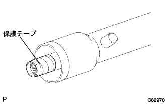
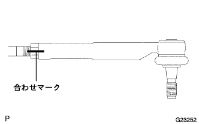

パワーステアリング リンクASSY（4WD） 組み付け |
| 1. パワーステアリングシリンダチューブオイルシール取り付け |
新品のシリンダチューブオイルシールのリップ部にパワーステアリングフルードを塗布する。
SSTおよびプレスを使用して、シリンダチューブオイルシールを取り付ける。
| 2. パワーステアリングラック点検 |
歯面の摩耗および損傷を点検する。
 |
Vブロックおよびダイヤルゲージを使用して、ステアリングラックの曲がりを点検する。
| 3. ラックステアリングピストンリング取り付け |
新品のピストンリングおよびOリングに、パワーステアリングフルードを塗布する。
Oリングをステアリングラックに取り付ける。
ピストンリングを指でしごいて取り付けやすいように拡張させる。
ピストンリングをステアリングラックに取り付ける。
 |
ホースクランプおよびバキュームホースを使用して、拡張したピストンリングを縮ませる。
| 4. パワーステアリングラック取り付け |
ラックカバーチューブが歯面およびポートを覆う状態でラック先端より約30mm長くなるように切断する。
 |
新聞紙程度の厚さの紙をステアリングラックの歯面を覆う幅でラックカバーチューブと同等の長さに切断する。
 |
ステアリングラックの歯の谷部にシャシーグリーススペシャルを充てんする。
ステアリングラック歯面を覆うように紙をセットする。
ラックカバーチューブを図のような折り目方向でポートを覆う位置まで挿入する。
 |
歯の背面側を利用して、図のようにステアリングラックをドライヤーの吹き出し口に斜めに当てて、ラックカバーチューブ内のエアをＢ側へ押し出すようにドライヤーを移動させてA部からB部までラックカバーチューブを収縮させる。
 |
ラックカバーチューブのみ180°回転させる。
歯の背面を利用して、ラックカバーチューブを収縮させる。
紙を抜き取る。
ステアリングラックを回しながら先端Ｃ部のみを十分暖めて、素早くラックカバーチューブをねじりながらラックエンドのねじ穴に押し込む。
先端に突起、エッジのないことを確認する。
ラックカバーチューブ表面に傷などないことを確認する。
ステアリングラックのラックカバーチューブおよびピストンリングにパワーステアリングフルードを塗布する。
ステアリングラックをラックハウジングに付け、ラックカバーチューブを取りはずす。
| 5. パワーステアリングラックブシュ取り付け |
新品のOリングおよびラックブシュオイルシールにパワーステアリングフルードを塗布する。
Oリングをラックブシュに取り付ける。
 |
SSTおよびプレスを使用して、ラックブシュオイルシールを取り付ける。
|  |
ステアリングラックのLH側に保護テープを巻き、パワーステアリングフルードを塗布する。
ラックハウジングのLH側にラックブシュを取り付ける。
保護テープを取りはずす。
| 6. シリンダエンドストッパ取り付け |
SSTおよびハンマーを使用して、ホールスナップリング取り付け溝が見えるまで、シリンダエンドストッパを挿入する。
| 7. シリンダエンドストッパホールスナップリング取り付け |
ニードルノーズプライヤーを使用して、新品のホールスナップリングを取り付ける。
| 8. パワーステアリングラックハウジング気密点検 |
SSTおよびマイティバッグを使用して、53kPa｛400mmHg｝の負圧をかけ、約30秒間保持したとき、指針に変化のないことを確認する。
| 9. パワーステアリングコントロールバルブベアリング取り付け |
新品のコントロールバルブアッパオイルシールのリップ部にMPグリースNo.2を塗布する。
SSTおよびプレスを使用して、コントロールバルブアッパオイルシールを圧入する。
SSTおよびプレスを使用して、コントロールバルブアッパベアリングを圧入する。
| 10. パワーステアリングコントロールバルブリング取り付け |
新品のコントロールバルブリング4個に、パワーステアリングフルードを塗布する。
コントロールバルブリングを指でしごいて取り付けやすいように拡張させる。
コントロールバルブリング4個をコントロールバルブに取り付け、手で押さえてなじませる。
 |
ホースクランプおよびバキュームホースを使用して、拡張したコントロールバルブリングを縮ませる。
| 11. パワーステアリングコントロールバルブ取り付け |
コントロールバルブのセレーション部に保護テープを巻く。
コントロールバルブアッパオイルシールのリップ部に、パワーステアリングフルードを塗布する。
 |
プレスを使用して、コントロールバルブをバルブハウジングに取り付ける。
| 12. パワーステアリングコントロールバルブASSY取り付け |
 |
ピニオンの歯の谷部およびラックハウジング内のニードルローラーベアリング部にシャシーグリーススペシャルを塗布する。
新品のガスケットをコントロールバルブＡＳＳＹに取り付ける。
合わせマークを合わせて、ボルト2本でコントロールバルブASSYを取り付ける。
| 13. パワーステアリングラックガイド取り付け |
 |
ラックガイドの図の面にシャシーグリーススペシャルを塗布する。
ラックガイドをラックハウジングに取り付ける。
スプリングキャップおよびラックハウジングのねじ部を清掃する。
ラックガイドスペーサおよびラックガイドスプリングをラックハウジングに取り付ける。
スプリングキャップのねじ部にアドヘシブ1344を塗布し、仮締めする。
| 14. 総合プレロード調整 |
ストレートヘキサゴンレンチ19を使用して、スプリングキャップを締め付ける。
ストレートヘキサゴンレンチ19を使用して、スプリングキャップを約１２°ゆるめる。
左右のラックエンドをステアリングラックに仮付けする。
 |
SSTを使用して、ステアリングラックを1-2回フルストロークさせ、ステアリングラックをなじませる。
ストレートヘキサゴンレンチ１９を使用して、ラックガイドスプリングが作用しなくなるまで、スプリングキャップをゆるめる。
SSTを使用して、コントロールバルブを回転させたとき、回転中のプレロードが基準値になるようにスプリングキャップを少しずつ締め込む。
| 15. パワーステアリングラックガイドキャップナット取り付け |
スプリングキャップナットのねじ部を清掃する。
スプリングキャップナットねじ部およびラックハウジング側端面にアドヘシブ1344を塗布する。
SSTおよびストレートヘキサゴンレンチ19を使用して、スプリングキャップナットを取り付ける。
| 16. 総合プレロード点検 |
SSTを使用して、総合プレロードを点検する。
| 17. ステアリングラック エンドSUB-ASSY取り付け |
左右のラックエンドのボールジョイント部にMPグリースNo.2を充てんする。
 |
片側のラックエンドをステアリングラックから取りはずす。
SSTを使用して、ステアリングラックを固定しラックエンドを取り付ける。
 |
SSTを使用して、締め付けた方のラックエンドを固定し反対側のラックエンドを取り付ける。
| 18. ステアリングラックエンド通気穴点検 |
 |
針金をラックエンドの通気穴に約30mm挿入し、詰まりのないことを点検する。
| 19. ステアリングラックハウジング ブラケット NO.2取り付け |
グロメットNo.2をブラケットNo.2に取り付ける。
 |
合わせマークを合わせて、ボルトでブラケットNo.2を取り付ける。
| 20. ステアリングラック ブーツ NO.2取り付け |
ラックブーツNo.2の小径内側にラバーグリースを塗布する。
 |
ラックブーツNo.2をラックハウジングの溝に取り付ける。
| 21. ステアリングラック ブーツ NO.1取り付け |
| 22. ステアリングラックブーツ クランプ NO.2取り付け |
新品のブーツクランプNo.2をラックブーツNo.2の溝部に取り付ける。
 |
SSTを使用して、ブーツクランプNo.2をかしめる。
| 23. ステアリングラックブーツ クランプ NO.1取り付け |
| 24. ステアリングラックブーツ クリップ取り付け |
プライヤーを使用して、クリップのツメを車両後方に向けて取り付ける。
SSTを使用して、コントロールバルブを回転させたとき、ラックブーツがスムースに伸縮することを確認する。
| 25. タイロッド エンドSUB-ASSY LH点検 |
アルミ板を介して、タイロッドエンドLHのボールジョイント部をバイスに軽く固定する。
キャッスルナットを仮付けする。
ボールジョイントを5往復回転させる。
 |
トルクレンチをナットにセットして、1回転/3-5秒の速度で連続してボールジョイントを回転させ、5回目の回転トルクを点検する。
| 26. タイロッド エンドSUB-ASSY RH点検 |
| 27. タイロッド エンドSUB-ASSY LH取り付け |
|  |
ロックナットおよびタイロッドエンドLHを合わせマークの位置までねじ込み、ロックナットを仮締めする。
| 28. タイロッド エンドSUB-ASSY RH取り付け |
| 29. ステアリングライトターンプレッシャチューブ取り付け |
新品のOリング2個にパワーステアリングフルードを塗布し、ライトターンプレッシャチューブに取り付ける。
 |
ユニオンナットレンチ12を使用して、ライトターンプレッシャチューブを取り付ける。
| 30. ステアリングレフトターンプレッシャチューブ取り付け |
| 31. プレッシャフィード チューブASSY取り付け |
プレッシャフィードチューブASSYをステアリングリンクASSYに仮付けする。
ボルト2本で、プレッシャフィードチューブASSYのクランプをステアリングリンクASSYに取り付ける。
 |
ユニオンナットレンチ19を使用して、プレッシャフィードチューブASSYを本締めする。
| 32. パワーステアリングラックハウジングヒート インシュレータ取り付け |
ボルト2本で、ヒートインシュレータをステアリングリンクASSYに取り付ける。
| 33. ステアリングコラムホール カバーSUB-ASSY NO.1取り付け |
ステアリングコラムホールカバーNo.1を取り付ける。